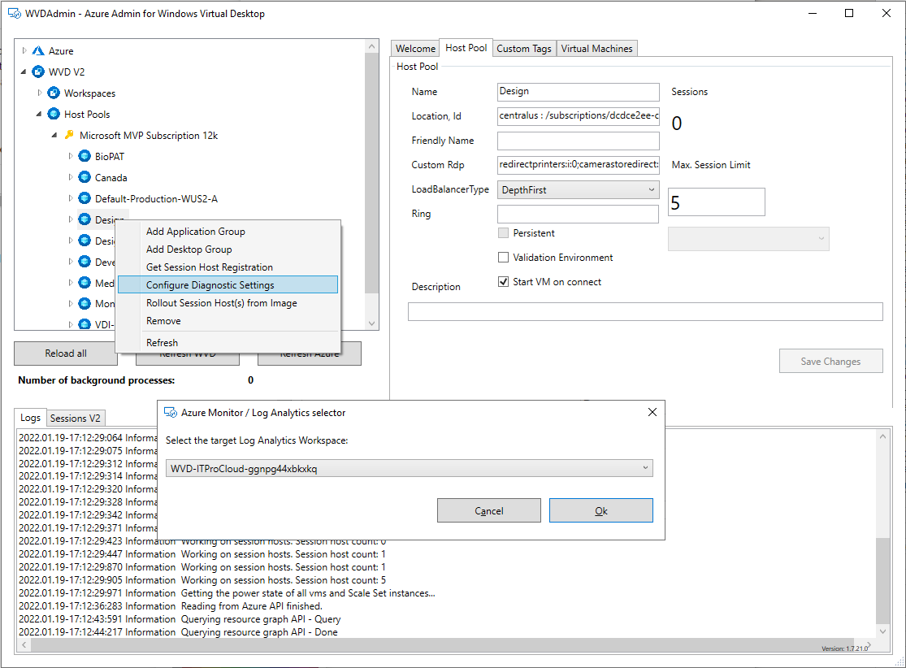

Debugging Azure Virtual Desktop errors/issues/network latency and bandwidth with an interactive Workbook
Correctly configured, Azure Virtual Desktop sends diagnostic data to a log analytics workspace (Azure Monitor). There are several logs containing data about the events in the backend:
| Log Type | Note |
|---|---|
| WVDAgentHealthStatus | Details about the session hosts |
| WVDConnections | All about connections from a user to a session host |
| WVDErrors | Error message from different sources (client, RDGateway, Loadbalancer, ...) |
| WVDFeeds | Log about clients downloading information about the AVD resources |
| WVDHostRegistrations | Logs if a host tries to register to a host pool |
| WVDManagement | Log about administrative tasks |
| WVDCheckpoints | Detailed information related to logins, errors, ... |
| WVDConnectionNetworkData | Network information (bandwidth and RTT) |
To get the logs, configure at least the host pool to send log information to a log analytics workspace. You can do this on a host pool level -> Diagnostic settings -> Add diagnostic settings -> Select all Logs and target a log analytics workspace.

Alternatively, you can use WVDAdmin to do that (use version 1.7.25 or higher):

It will take a while before you can see the first data. The data can be queried with the KUSTO language or analyzed with custom workbooks. I prepared a workbook to dig into the data. Most visualizations are interactive. So you can drill down by selecting users, networks, agent versions, and more.
You can install the workbook directly as a template into your subscription: Install the workbook
After a while, the workbook is visible as a new template in: Log Analytics -> Workbooks -> Azure Virtual Desktop -> AVD - Deep-Insights
You can select the time frame and host pool from the drop-down list. The other drop-down lists are optional. Please ensure that you have included the essential errors from the error selector. Remember that not all errors are making issues (e.g., "ConnectionFailedClientDisconnected" occurs if a session goes in the disconnected mode while the users close its notebook).
Please let me know if you have ideas to extend the workbook.
| Version | Date | Note |
|---|---|---|
| 1.1 | 01/28/2022 | Initial |
| 1.2 | 02/17/2022 | Include RTT and bandwidth (right now, host pool must be in the validation environment and diagnostic data must include NetworkData); Renaming of the workbook |
| 1.3 | 03/16/2022 | Include Logon timing (GPO, FSLogix, Authentication, etc.) |
| 1.4 | 04/14/2022 | In Session Bandwidths & Latencies: The connection type is shown if RDP Short Path is used (Public, Private). See: https://docs.microsoft.com/en-us/azure/virtual-desktop/shortpath-public |
| 1.5 | 05/03/2022 | New visualization: Logon timing per day and category over the time |
| 1.6 | 10/11/2022 | New visualization: Connections over time, unhealthy session hosts, graphic performance |
| 1.7 | 11/03/2022 | Optimization for charts to show data over a large time frame |
| 1.8 | 11/14/2022 | A new tab "Resources", to show orphan session hosts; Fix: Number of active and inactive sessions - timeselector was not correct |
| 1.9 | 11/18/2022 | A new tab "Resources", to show orphan VMs (where the session host object is missing) |
| 2.0 | 12/01/2022 | Changed the description for the estimated available bandwidth |
| 2.1 | 12/09/2022 | Added orphan disks and orphan nics to the "Resources" tab (note: All orphand devices will also shown and could be removed in Hydra for Azure Virtual Desktop, version 1.0.1.84 (comming soon)) |
| 2.2 | 02/02/2023 | Added "Water Markings" to query session information by the feature WaterMarking |
| 2.3 | 02/20/2023 | Added "Unresponding AVD Agents" in the tab "Resources" to identify running VM with a non responding AVD agent |
| 2.4 | 02/21/2023 | Added new tab "FSLogix" to show the size, usage and free space of the FSLogix profiles |
| 2.5 | 03/08/2023 | Fix in the time selector; allow to selecte multiple host pools; show active sessions with user name and started desktop/remote app |
| 2.6 | 03/31/2023 | Add: Show office container size and usage (ODFC) in the FSLogix tab (additional to the profile container) |
| 2.7 | 07/01/2023 | Fix/Workaround: VHDFreeSpace is stored as text in MByte and not in GByte if the value is less then 1 GByte |
| 2.8 | 10/13/2023 | Add: Show the last heart beat time in the Orphan session hosts view and warns, if the heart beat is longer then 90 days ago |
| 3.0 | 06/24/2024 | Fix: Orphan resources are now including temporary orphan hosts |
| 3.1 | 10/24/2024 | Add: Show "TURN" in session bandwidth and latency (if session was connected via TURN) |
| 3.2 | 11/29/2024 | Add: Show the country and city of the connections (based on the client internet IP) |
| 3.4 | 06/28/2025 | Add: Show RTT and bandwidth by client location |
| 3.5 | 07/24/2025 | Add: Show RDS Shortpath Multipath |
| 3.6 | 11/18/2025 | Fix: Improved orphan detection for Azure Local; Calculating the FSLogix size on disk |
Please click twice on create to accept the Microsoft Agreement of terms - Workbooks don't generate costs.